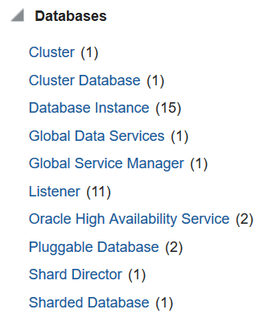
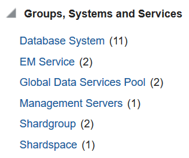
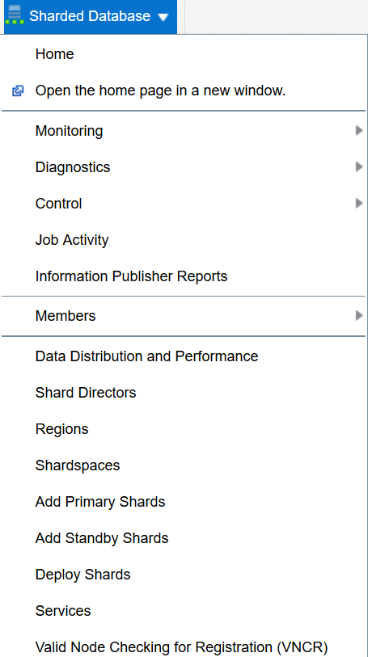
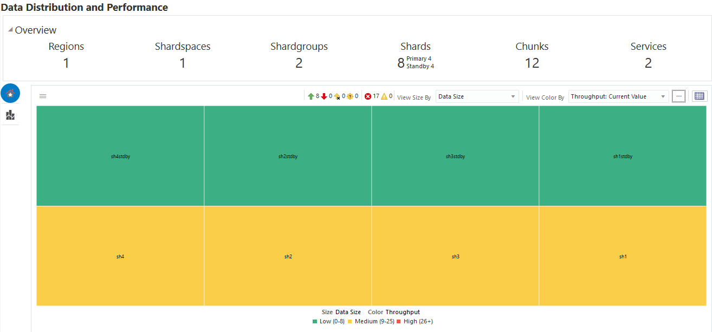
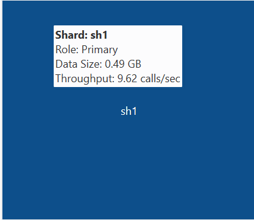
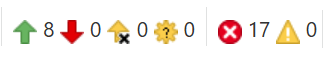
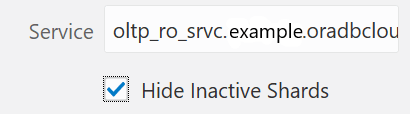
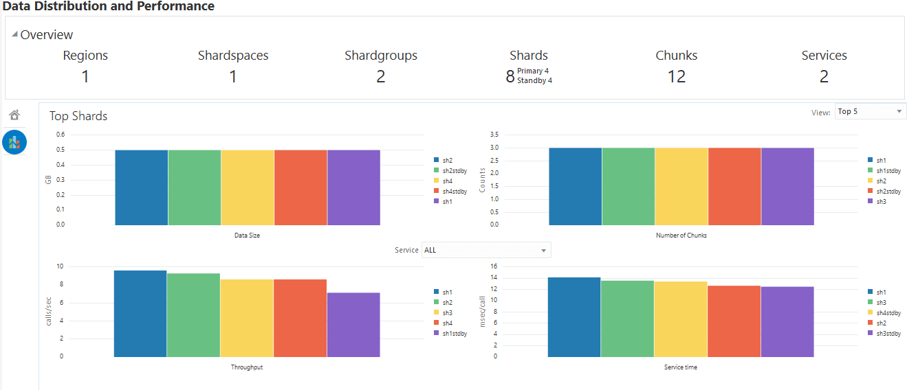
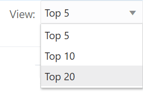

10 Sharded Database Administration
Oracle Sharding provides tools and some automation for the administration of a sharded database.
The following topics describe sharded database administration in detail:
Managing the Sharding-Enabled Stack
This section describes the startup and shutdown of components in the sharded database configuration. It contains the following topics:
Starting Up the Sharding-Enabled Stack
The following is the recommended startup sequence of the sharding-enabled stack:
-
Start the shard catalog database and local listener.
-
Start the shard directors (GSMs).
-
Start up the shard databases and local listeners.
-
Start the global services.
-
Start the connection pools and clients.
Shutting Down the Sharding-Enabled Stack
The following is the recommended shutdown sequence of the sharding-enabled stack:
-
Shut down the connection pools and clients.
-
Stop the global services.
-
Shut down the shard databases and local listeners.
-
Stop the shard directors (GSMs).
-
Stop the shard catalog database and local listener.
Oracle Globally Distributed Database Users and Roles
Here you will learn about the management of database users and roles specific to Oracle Globally Distributed Database.
Overview of Users and Roles
In Oracle Sharding some types of users require certain roles and privileges.
For sharded databases there are two kinds of users:
-
Sharded database/GSM administrator - Grant this user the
GSMADMIN_ROLErole. This role should be granted to one, or only a few accounts, that require elevated privileges to do administrative tasks. This role has a number of powerful privileges, includingALTER SYSTEM. -
Regular sharded database user - This type of user includes any account which has been created under
ENABLE SHARD DDL; these users have no special privileges or roles except those needed to run a sharded application. The database administrator decides which privileges these accounts need, and grants them individually to the account.
Oracle Sharding Database Roles
Oracle Sharding provides a set of predefined database roles to help in sharded database administration.
Most of the Oracle Sharding database roles don't have many privileges, but they do have execute rights on certain Oracle-delivered procedures and packages which allow them to perform administrative tasks.
| Predefined Role | Description |
|---|---|
|
GSMADMIN_ROLE |
Should be granted to sharded database administrators, so that they can administer a sharded database configuration |
|
GSMCATUSER_ROLE |
Granted only the Oracle delivered account |
|
GSMROOTUSER_ROLE |
Granted only to Oracle delivered account |
|
GSMUSER_ROLE |
Granted only to Oracle delivered account |
For more information about database roles, see Predefined Roles in an Oracle Database Installation.
About the GSMUSER Account
The GSMUSER account is used by GDSCTL and global service managers to connect to databases in a GDS configuration.
GSMUSER exists by default on any Oracle database. In an Oracle Sharding configuration, the account is used to connect to shards instead of pool databases, and it must be granted both the SYSDG and SYSBACKUP system privileges after the account has been unlocked.
The password given to the GSMUSER account is used in the gdsctl add shard command. Failure to grant SYSDG and SYSBACKUP to GSMUSER on a new shard causes gdsctl add shard to fail with an ORA-1031: insufficient privileges error.
If you use the gdsctl create shard command to create a new shard with the Database Configuration Assistant (DBCA), the GSMUSER account is automatically granted the SYSDG and SYSBACKUP privileges and assigned a random password during the deployment process. Because the GSMUSER account never needs to be logged into interactively, the value of the password does not need to be known by administrators; however, the password can be changed after deployment if required by using the alter user SQL command on the shard, in combination with the gdsctl modify shard -pwd command.
About the GSMROOTUSER Account
GSMROOTUSER is a database account specific to Oracle Sharding that is only used when pluggable database (PDB) shards are present. The account is used by GDSCTL and global service managers to connect to the root container of container databases (CDBs) to perform administrative tasks.
If PDB shards are not in use, the GSMROOTUSER user should not by unlocked nor
assigned a password on any database. However, in sharded configurations containing PDB
shards, GSMROOTUSER must be unlocked and granted the SYSDG and SYSBACKUP privileges
before a successful gdsctl add cdb command can be run. The password for
the GSMROOTUSER account can be changed after deployment if desired using the
alter user SQL command in the root container of the CDB in
combination with the gdsctl modify cdb -pwd command.
Backing Up and Recovering a Sharded Database
Because shards are hosted on individual Oracle databases, you can use Oracle Maximum Availability best practices to back up and restore shards individually.
If you are using Data Guard and Oracle Active Data Guard for SDB high availability, be sure to take observers offline and disable Fast Start Failover before taking a primary or standby database offline.
Contact Oracle Support for specific steps to recover a shard in the event of a disaster.
See Also:
Oracle Maximum Availability Architecture for MAA best practices white papers
Modifying a Sharded Database Schema
When making changes to duplicated tables or sharded tables in a sharded database, these changes should be done from the shard catalog database.
Before executing any DDL operations on a sharded database, enable sharded DDL with
ALTER SESSION ENABLE SHARD DDL; This statement ensures that the DDL changes will be propagated to each shard in the sharded database.
The DDL changes that are propagated are commands that are defined as “schema
related,” which include operations such as ALTER TABLE. There are
other operations that are propagated to each shard, such as the CREATE, ALTER,
DROP user commands for simplified user management, and
TABLESPACE operations to simplify the creation of tablespaces on
multiple shards.
GRANT and REVOKE operations can be done from the shard catalog and are propagated to each shard, providing you have enabled shard DDL for the session. If more granular control is needed you can issue the command directly on each shard.
Operations such as DBMS package calls or similar operations are not propagated. For example, operations gathering statistics on the shard catalog are not propagated to each shard.
If you perform an operation that requires a lock on a table, such as adding a not null column, it is important to remember that each shard needs to obtain the lock on the table in order to perform the DDL operation. Oracle’s best practices for applying DDL in a single instance apply to sharded environments.
Multi-shard queries, which are executed on the shard catalog, issue remote queries across database connections on each shard. In this case it is important to ensure that the user has the appropriate privileges on each of the shards, whether or not the query will return data from that shard.
See Also:
Oracle Database SQL Language Reference for information about operations used with duplicated tables and sharded tables
Propagation of Parameter Settings Across Shards
When you configure system parameter settings at the shard catalog, they are automatically propagated to all shards of the sharded database.
Before Oracle Database 19c, you had to configure ALTER SYSTEM parameter settings on each shard in a sharded database. In Oracle Database 19c, Oracle Sharding provides centralized management by allowing you to set parameters on the shard catalog. Then the settings are automatically propagated to all shards of the sharded database.
Propagation of system parameters happens only if done under ENABLE SHARD DDL on the shard catalog, then include SHARD=ALL in the ALTER statement.
SQL>alter session enable shard ddl;
SQL>alter system set enable_ddl_logging=true shard=all;Note:
Propagation of theenable_goldengate_replication parameter setting is not supported.
Migrating a Non-PDB Shard to a PDB
Do the following steps if you want to migrate shards from a legacy single-instance database to Oracle multitenant architecture.
Managing Sharded Database Software Versions
This section describes the version management of software components in the sharded database configuration. It contains the following topics:
Patching and Upgrading a Sharded Database
Applying an Oracle patch to a sharded database environment can be done on a single shard or all shards; however, the method you use depends on the replication option used for the environment and the type of patch being applied.
Oracle Sharding uses consolidated patching to update a shard director (GSM) ORACLE_HOME, so you must apply the Oracle Database release updates to the ORACLE_HOME to get security and Global Data Services fixes.
Patching a Sharded Database
Most patches can be applied to a single shard at a time; however, some patches should
be applied across all shards. Use Oracle’s best practices for applying patches to
single shards just as you would a non-sharded database, keeping in mind the
replication method that is being used with the sharded database. Oracle
opatchauto can be used to apply patches to multiple shards at a
time, and can be done in a rolling manner. Data Guard configurations are applied one
after another, and in some cases (depending on the patch) you can use Standby First
patching.
When using Oracle GoldenGate be sure to apply patches in parallel across the entire shardspace. If a patch addresses an issue with multi-shard queries, replication, or the sharding infrastructure, it should be applied to all of the shards in the sharded database.
Note:
Because logical standbys are not supported in Oracle Sharding, rolling upgrades may run into a DDL recovery issue because a physical standby database becomes a 'transient logical standby' during a rolling upgrade. To avoid this issue, follow the steps in Performing a Rolling Upgrade.Note:
Oracle GoldenGate replication support for Oracle Sharding High Availability is deprecated in Oracle Database 21c.Upgrading a Sharded Database
Upgrading the Oracle Sharding environment is not much different from upgrading other Oracle Database and global service manager environments; however, the components must be upgraded in a particular sequence such that the shard catalog is upgraded first, followed by the shard directors, and finally the shards.
See Also:
Oracle Database Global Data Services Concepts and Administration Guide for information about upgrading the shard directors.
Oracle Data Guard Concepts and Administration for information about patching and upgrading in an Oracle Data Guard configuration.
Performing a Rolling Upgrade
Because logical standbys are not supported in Oracle Sharding, rolling upgrades may run into a DDL recovery issue because a physical standby database becomes a 'transient logical standby' during a rolling upgrade.
To avoid this issue, perform the following steps.
Note:
During a rolling upgrade, some operations such as automatic failover may not be available while the shard catalog is shut down.Upgrading Sharded Database Components
The order in which sharded database components are upgraded is important for limiting downtime and avoiding errors as components are brought down and back online.
Before upgrading any sharded database components you must
-
Complete any pending
MOVE CHUNKoperations that are in progress. -
Do not start any new
MOVE CHUNKoperations. -
Do not add any new shards during the upgrade process.
See Also:
Oracle Data Guard Concepts and Administration for information about using DBMS_ROLLING to perform a rolling upgrade.
Oracle Data Guard Concepts and Administration for information about patching and upgrading databases in an Oracle Data Guard configuration.
Downgrading a Sharded Database
Oracle Sharding does not support downgrading.
Sharded database catalogs and shards cannot be downgraded.
Compatibility and Migration from Oracle Database 18c
When upgrading from an Oracle Database 18c installation which contains a single PDB shard for a given CDB, you must update the shard catalog metadata for any PDB.
Specifically, in 18c, the name of a PDB shard is the DB_UNIQUE_NAME of its CDB; however, in Oracle Database
19c, the shard names are db_unique_name_of_CDB_pdb_name.
To update the catalog metadata to reflect this new naming methodology,
and to also support the new GSMROOTUSER account as described in
About the GSMROOTUSER Account, perform the following steps during the upgrade process as
described in Upgrading Sharded Database Components.
Managing Oracle Sharded Database with Enterprise Manager Cloud Control
Oracle Enterprise Manager Cloud Control lets you discover, monitor, and manage a sharded database and its components.
See the following topics for information about sharded database discovery, monitoring, and management using Enterprise Manager Cloud Control:
- Prerequisite: Enable Sharded Database Metrics
- Prerequisite: Discover the Sharded Database Topology
- Monitoring a Sharded Database with Enterprise Manager Cloud Control
- Overview of Sharded Database Management Using Oracle Enterprise Manager Cloud Control
- Shard Management
- Chunk Management
- Shard Director Management
- Region Management
- Shardspace Management
- Shardgroup Management
- Services Management
Prerequisite: Enable Sharded Database Metrics
By default sharded database performance metrics are disabled. They can be enabled from the Enterprise Manager Cloud Console or the monitoring template.
There are two methods of gathering metrics, which require you to follow different setup steps as explained in each section below.
Using Default Enterprise Manager Database Metrics
By default metrics shown in the Enterprise Manager Cloud Console Sharded Database pages are the default database metrics, require that you create a metrics query user, and are only gathered on the shard databases discovered in Enterprise Manager.
The default database metrics do not give you data as frequently as the enhanced sharded database metrics described later.
Because multi-shard queries are used to gather metrics, you must also create a user that can access all shards in the sharded database to run the queries.
To use default metrics:
-
Grant the user permission to run the cross shard queries.
alter session enable shard ddl; -
Create a new metrics query account on every shard and the shard catalog manually.
create user SHARD_SYS identified by password; grant connect, create session, gsmadmin_role to SHARD_SYS; GRANT ALL PRIVILEGES TO SHARD_SYS; /*Needed to get all the schemas stats*/ GRANT SELECT ANY DICTIONARY TO SHARD_SYS; /*Needed to get all the schemas stats*/ -
Use the same metrics query account credentials to discover the shard catalog and all shard databases in Enterprise Manager.
-
To enable the default metrics:
$emctl set property -sysman_pwd password -name oracle.sysman.db.ha.sdb.dd.usesdbmetrics -value false
Using Enhanced Sharded Database Metrics
With Sharded Database enhanced metrics you can gather information about the shards from the shard catalog, so it is not required that you discover all of the shard databases in Enterprise Manager to get complete metrics for the sharded database topology.
To use enhanced metrics:
-
Discover the shard catalog in Enterprise Manager.
-
Enable the Sharded Database metrics using the Console or using the monitoring template.
$emctl set property -sysman_pwd password -name oracle.sysman.db.ha.sdb.dd.usesdbmetrics -value true
Discovering Sharded Database Components
In Enterprise Manager Cloud Control, you can discover the shard catalog and shard databases, then add the shard directors, sharded databases, shardspaces, and shardgroups using guided discovery.
As a prerequisite to managing the sharded database in Cloud Control, you must first discover at minimum the shard director hosts and the shard catalog database. Optionally to manage all of the shards in the sharded database, you must also discover the shard databases.
Because the shard catalog database and each of the shards is a database itself, you can use standard database discovery procedures.
Managing the shards is only possible when the individual shards are discovered using database discovery. Discovering the shards is optional to discovering a sharded database, because you can have a sharded database configuration without the shards.
When the target discovery procedure is finished, sharded database targets are added in Cloud Control. You can open the sharded database in Cloud Control to monitor and manage the components.
Overview of Sharded Database Management with Oracle Enterprise Manager Cloud Control
Your sharded database can be configured, deployed, monitored, and managed using Oracle Enterprise Manager Cloud Control
Any discovered sharded database objects can be found in the All Targets page in Enterprise Manager.
Shown below are the Oracle Sharding objects Shard Director and Shard Database in the Databases target type category.

Shown below are the Oracle Sharding objects Shardgroup and Shardspace in the Groups, Systems and Services target type category.

On the Sharded Database page, you can access most of the management tools from the Sharded Database menu, such as Add Primary Shards, Add Standby Shards, and Deploy Shards, as shown below.

Management tools for other sharded database objects are located in the menus of other Sharded Database object pages, which are described in the procedures requiring that access to those pages.
Monitoring a Sharded Database
Sharded databases can be monitored using Enterprise Manager Cloud Control or GDSCTL.
See the following topics to use Enterprise Manager Cloud Control or GDSCTL to monitor sharded databases.
Querying System Objects Across Shards
Use the SHARDS() clause to query Oracle-supplied tables to gather performance, diagnostic, and audit data from V$ views and DBA_* views.
The shard catalog database can be used as the entry point for centralized diagnostic operations using the SQL SHARDS() clause. The SHARDS() clause allows you to query the same Oracle supplied objects, such as V$, DBA/USER/ALL views and dictionary objects and tables, on all of the shards and return the aggregated results.
As shown in the examples below, an object in the FROM part of the SELECT statement is wrapped in the SHARDS() clause to specify that this is not a query to local object, but to objects on all shards in the sharded database configuration. A virtual column called SHARD_ID is automatically added to a SHARDS()-wrapped object during execution of a multi-shard query to indicate the source of every row in the result. The same column can be used in predicate for pruning the query.
A query with the SHARDS() clause can only be run on the shard catalog database.
Examples
The following statement queries performance views
SQL> SELECT shard_id, callspersec FROM SHARDS(v$servicemetric)
WHERE service_name LIKE 'oltp%' AND group_id = 10;The following statement gathers statistics.
SQL> SELECT table_name, partition_name, blocks, num_rows
FROM SHARDS(dba_tab_partition) p
WHERE p.table_owner= :1;The following example statement shows how to find the SHARD_ID value for each shard.
SQL> select ORA_SHARD_ID, INSTANCE_NAME from SHARDS(sys.v_$instance);
ORA_SHARD_ID INSTANCE_NAME
------------ ----------------
1 sh1
11 sh2
21 sh3
31 sh4The following example statement shows how to use the SHARD_ID to prune a query.
SQL> select ORA_SHARD_ID, INSTANCE_NAME
from SHARDS(sys.v_$instance)
where ORA_SHARD_ID=21;
ORA_SHARD_ID INSTANCE_NAME
------------ ----------------
21 sh3
See Also:
Oracle Database SQL Language Reference for more information about the SHARDS() clause.
Monitoring a Sharded Database with GDSCTL
There are numerous GDSCTL CONFIG commands that you can use to obtain the health status of individual shards, shardgroups, shardspaces, and shard directors.
Monitoring a shard is just like monitoring a normal database, and standard Oracle best practices should be used to monitor the individual health of a single shard. However, it is also important to monitor the overall health of the entire sharded environment. The GDSCTL commands can also be scripted and through the use of a scheduler and can be done at regular intervals to help ensure that everything is running smoothly. When using Oracle GoldenGate for replication it is also important to monitor the lag of each replication stream.
See Also:
Oracle Database Global Data Services Concepts and Administration Guide for information about using the GDSCTL CONFIG commands
Monitoring a Sharded Database with Enterprise Manager Cloud Control
Sharded database targets are found in the All Targets page in Enterprise Manager Cloud Control.
To monitor sharded database components you must first enable statistics gathering and then discover the sharded database. See Prerequisite: Enable Sharded Database Metrics and Discovering Sharded Database Components for more information.
Sharded Database Home Page
The target home page for a sharded database shows you a summary of the sharded database components and their statuses.
Summary
The Summary pane, in the top left of the page, shows the following information:
-
Sharded Database Name: Sharded database name
-
Sharded Database Domain Name: Sharded database domain name
-
Catalog Database: Shard catalog database name. You can click the name to view more information about the shard catalog database.
-
Catalog Version: Oracle Database version of the shard catalog
-
Sharding Type: Sharding method used to shard the database. This could be System-managed, User-defined, or Composite.
-
Replication Type: Replication technology used for high availability.
-
Shard Directors: Number and status of the shard directors
-
Master Shard Director: Master shard director name. You can click the shard director name to view more information about the master shard director, including the shard director (global service manager) version, current status, ports used, and incidents.
Members
The Members pane, in the upper right of the page, shows some relevant information about each of the sharded database components.
The pane is divided into tabs for each component: Shardspaces, Shardgroups, Shard Directors, Shards, Catalog Databases, and Global Services. Click on a tab to view the information about each type of component
-
Shardspaces:
Shardspaces are only displayed for databases sharded with the user-defined or composite sharding method.
The Shardspaces tab displays the shardspace names, status, number of chunks, and protection mode. The shardspace names can be clicked to reveal more details about the selected shardspace.
You can click the shardspace name to view more details, including information about the shardgroups within the shardspace (for composite sharding) and incidents.
-
Shardgroups:
Shardgroups are only displayed for databases sharded with the system-managed or composite sharding method.
The Shardgroups tab displays the shardgroup names, status, the shardspace to which it belongs, the number of chunks, Data Guard role, and the region to which it belongs.
You can click the shardgroup name to reveal more details about the selected component, including information about the shards within the shardgroup, and incidents.
Note that for a database sharded using the system-managed sharding method,
shardspaceorais the shardspace created by Oracle Sharding to contain all of the shardgroups. It is managed by Oracle Sharding and will not appear in the Shardspaces tab. -
Shard Directors:
The Shard Directors tab displays the shard director names, status, region, host, and Oracle home.
You can click the shard director names to reveal more details about the selected shard director, including the shard director (global service manager) version, current status, ports used, and incidents.
You can also click the shard director host to view more details about the host system.
-
Shards:
The Shards tab displays the shard names, Data Guard roles, target type, target status, the shardspaces and shardgroups to which they belong, the regions to which they belong, and the state (deployed or .
In the Names column, you can expand the primary shards to display the information about their corresponding standby shards.
You can hover the mouse over the Deployed column icon and the deployment status details are displayed. You can click on the shard, shardspace, and shardgroup names to reveal more details about the selected component.
-
Catalog Databases
The Catalog Databases tab lists the shard catalog databases and displays the shard catalog database name, type, status, and role for each catalog database.
You can click on the catalog database name to view more information about the database.
-
Global Services:
The Global Services tab displays the name, status, and Data Guard role of the sharded database global services. Above the list is shown the total number of services and an icon showing how many services are in a particular status. You can hover your mouse pointer over the icon to read a description of the status icon.
Incidents
The Incidents pane displays messages and warnings about the various components in the sharded database environment. More information about how to use this pane is in the Cloud Control online help.
Sharded Database Menu
The Sharded Database menu, located in the top left corner, provides you with access to tools to manage the sharded database components.
Target Navigation
The Target Navigation pane gives you easy access to more details about any of the components in the sharded database.
Clicking the navigation tree icon on the upper left corner of the Sharded Database home page opens the Target Navigation pane. This pane shows all of the discovered components in the sharded database in tree form.
Expanding a shardspace reveals the shardgroups in them. Expanding a shardgroup reveals the shards in that shardgroup.
Any of the component names can be clicked to view more details about them.
Data Distribution and Performance Page
In Enterprise Manager Cloud Control, the Sharded Database page, Data Distribution and Performance, gives you an overall view of the data in your sharded database and how the shards are performing.
Overview

The Overview section at the top of the page displays number of regions, shardspaces, shardgroups, shards (broken down into primary and standby), chunks, and services in the sharded database configuration that are represented by the data in the chart. If you apply a filter to the chart these numbers change.
Data Distribution and Performance Chart Views
The two icons at the top left corner of the chart toggle the chart between two views:
Figure 10-1 Home and Top Shards Icons
-
Home: is the default view. Home displays data for all shards in the sharded database by default. You can filter the chart and change the metrics on display as described below.
-
Top Shards: shows you charts for the top 5, 10, or 20 shards for certain metrics.
Shard Blocks
The color-coded chart displays data by shard. Each shard is indicated by a block.
Figure 10-2 Shard Block with Mouse Over Text

Each block is labeled with the shard name. Moving the mouse over a block displays the Shard name, Data Guard Role, Number of Chunks in the shard, and the Service Time (msec/call).
Note:
If you are using default database metrics then you will not see data from any undiscovered shards in the chart.If you are using enhanced metrics, the data for all shards is displayed because the shards are discovered by the shard catalog.
Home View Summary Icons
The row of icons above the chart display the following information:
Figure 10-3 Home View Summary Icons

-
Up: (Green arrow pointing up) Number of shard databases that are up
-
Down: (Red arrow pointing down) Number of shards that are down
-
Unmonitored: (Yellow arrow with "X") Number of shards that are unmonitored. This is the number of shards not discovered by Enterprise Manager.
-
Other: (Yellow gear with question mark "?")Sharded database targets discovered in Enterprise Manager, but that have some issue with target monitoring, such as an unreachable agent, or an availability evaluation error.
-
Critical: (Red circle with "X") Number of critical incidents
-
Warning: (Yellow triangle with exclamation point "!") Number of warning incidents
Chart View Controls
Compare metrics on each of the shards by size and color of the blocks in the chart.
Figure 10-4 Chart View Controls
-
View Size By: changes the size distribution of the blocks by the metric selected
-
View Color By: changes the comparative color of the blocks by the metric selected
By default, the colors are light, medium, and dark blue, which indicates that the thresholds for the lightest and darkest color categories are set to arbitrary Enterprise Manager defaults.
Click Configure Threshold (button with three dots) to set custom thresholds for low and high categories in each metric. Charts configured with custom thresholds are shown in a different color spectrum with green=low, yellow=medium, and red=high.
-
Tree Map Table View: (button with table at the top right corner of the chart) displays a table view of the data shown in the chart
Filters
Click the hamburger icon at the top left corner of the chart to apply filters to the data.
Figure 10-5 Filters Icon
-
Shard Search: Filter by shard name. You can use an asterisk (*) to select a group of shards with matching name patterns.
-
Key Search: Lets you enter a shard key value to view the shards that contain data with that key. In the resulting chart you can right-click a block and select Shard-Level Data Distribution to drill down into a particular shard.
-
SQL ID Search: Display which shards are executing a query by the SQL ID for the query, which you can find in the
V$SQL_SHARDview in the catalog database. -
Sort By: Sort the blocks in the chart by size in the default tiled view, in a sequence of bars, or show only the top or bottom 5 blocks.
-
Filter By: Lets you display only shards in the specified Role, Shardgroup, or Service.
Hide Inactive Shards: When using the Service filter, you will see all of the shards; however, shards on which the service is not running are shown in grey (inactive), and you can use the checkbox to hide the inactive shards.

-
Group By: Toggles that display aggregates for the group, which is indicated by a box line around the group of shards.
-
Shardgroup displays a shardgroup box at the top of the grouping, which displays aggregate info about the shardgroup on hover, and you can drill down for shardgroup-based data.
-
Region displays a region box at the top of the group, which displays aggregate info about the region on hover.
-
Data Guard Aggregate Group groups each shard and its standbys as a single entity, so that you can see the data set being handled by a particular shard and its standbys as a whole.
-
Top Shards View
Click the Top Shards button on the left side of the chart to view graphs with metrics on the shards with the highest Data Size, Number of Chunks, Throughput, and Service Time.

Use the View list at the top right corner of the view to display the top 5, 10, or 20 shards in each graph.

Shard Management
You can manage shards in your Oracle Sharding deployment with Oracle Enterprise Manager Cloud Control and GDSCTL.
The following topics describe shard management concepts and tasks:
About Adding Shards
New shards can be added to an existing sharded database environment to scale out and to improve fault tolerance.
For fault tolerance, it is beneficial to have many smaller shards than a few very large ones. As an application matures and the amount of data increases, you can add an entire shard or multiple shards to the SDB to increase capacity.
When you add a shard to a sharded database, if the environment is sharded by consistent hash, then chunks from existing shards are automatically moved to the new shard to rebalance the sharded environment.
When using user-defined sharding, populating a new shard with data may require manually moving chunks from existing shards to the new shard using the GDSCTL split chunk and move chunk commands.
Oracle Enterprise Manager Cloud Control can be used to help identify chunks that would be good candidates to move, or split and move to the new shard.
When you add a shard to the environment, verify that the standby server is ready, and after the new shard is in place take backups of any shards that have been involved in a move chunk operation.
Resharding and Hot Spot Elimination
The process of redistributing data between shards, triggered by a change in the number of shards, is called resharding. Automatic resharding is a feature of the system-managed sharding method that provides elastic scalability of an SDB.
Sometimes data in an SDB needs to be migrated from one shard to another. Data migration across shards is required in the following cases:
-
When one or multiple shards are added to or removed from an SDB
-
When there is skew in the data or workload distribution across shards
The unit of data migration between shards is the chunk. Migrating data in chunks guaranties that related data from different sharded tables are moved together.
When a shard is added to or removed from an SDB, multiple chunks are migrated to maintain a balanced distribution of chunks and workload across shards.
Depending on the sharding method, resharding happens automatically (system-managed) or is directed by the user (composite). The following figure shows the stages of automatic resharding when a shard is added to an SDB with three shards.
A particular chunk can also be moved from one shard to another, when data or workload skew occurs, without any change in the number of shards. In this case, chunk migration can be initiated by the database administrator to eliminate the hot spot.
RMAN Incremental Backup, Transportable Tablespace, and Oracle Notification Service technologies are used to minimize impact of chunk migration on application availability. A chunk is kept online during chunk migration. There is a short period of time (a few seconds) when data stored in the chunk is available for read-only access only.
FAN-enabled clients receive a notification when a chunk is about to become read-only in the source shard, and again when the chunk is fully available in the destination shard on completion of chunk migration. When clients receive the chunk read-only event, they can either repeat connection attempts until the chunk migration is completed, or access the read-only chunk in the source chunk. In the latter case, an attempt to write to the chunk will result in a run-time error.
Note:
Running multi-shard queries while a sharded database is resharding can result in errors, so it is recommended that you do not deploy new shards during multi-shard workloads.
Removing a Shard From the Pool
It may become necessary to remove a shard from the sharded database environment, either temporarily or permanently, without losing any data that resides on that shard.
For example, removing a shard might become necessary if a sharded environment is scaled down after a busy holiday, or to replace a server or infrastructure within the data center. Prior to decommissioning the shard, you must move all of the chunks from the shard to other shards that will remain online. As you move them, try to maintain a balance of data and activity across all of the shards.
If the shard is only temporarily removed, keep track of the chunks moved to each shard so that they can be easily identified and moved back once the maintenance is complete.
See Also:
Oracle Database Global Data Services Concepts and Administration Guide for information about using the GDSCTL REMOVE SHARD command
Adding Standby Shards
You can add Data Guard standby shards to an Oracle Sharding environment; however there are some limitations.
When using Data Guard as the replication method for a sharded database, Oracle Sharding supports only the addition of a primary or physical standby shard; other types of Data Guard standby databases are not supported when adding a new standby to the sharded database. However, a shard that is already part of the sharded database can be converted from a physical standby to a snapshot standby. When converting a physical standby to a snapshot standby, the following steps should be followed:
If the database is converted back to a physical standby, the global services can be enabled and started again, and the shard becomes an active member of the sharded database.
Managing Shards with Oracle Enterprise Manager Cloud Control
You can manage database shards using Oracle Enterprise Manager Cloud Control
To manage shards using Cloud Control, they must first be discovered. Because each database shard is a database itself, you can use standard Cloud Control database discovery procedures.
The following topics describe shard management using Oracle Enterprise Manager Cloud Control:
Validating a Shard
Validate a shard prior to adding it to your Oracle Sharding deployment.
You can use Oracle Enterprise Manager Cloud Control to validate shards before adding them to your Oracle Sharding deployment. You can also validate a shard after deployment to confirm that the settings are still valid later in the shard lifecycle. For example, after a software upgrade you can validate existing shards to confirm correctness of their parameters and configuration.
To validate shards with Cloud Control, they should be existing targets that are being monitored by Cloud Control.
- From a shardgroup management page, open the Shardgroup menu, located in the top left corner of the shardgroup target page, and choose Manage Shards.
- If prompted, enter the shard catalog credentials, select the shard director to manage under Shard Director Credentials, select the shard director host credentials, and log in.
- Select a shard from the list and click Validate.
- Click OK to confirm you want to validate the shard.
- Click the link in the Information box at the top of the page to view the provisioning status of the shard.
When the shard validation script runs successfully check for errors reported in the output.
Adding Primary Shards
Use Oracle Enterprise Manager Cloud Control to add a primary shards to your Oracle Sharding deployment.
Primary shards should be existing targets that are being monitored by Cloud Control.
It is highly recommended that you validate a shard before adding it to your Oracle Sharding environment. You can either use Cloud Control to validate the shard (see Validating a Shard), or run the DBMS_GSM_FIX.validateShard procedure against the shard using SQL*Plus (see Validating a Shard).
If you did not select Deploy All Shards in the sharded database in the procedure above, deploy the shard in your Oracle Sharding deployment using the Deploying Shards task.
Adding Standby Shards
Use Oracle Enterprise Manager Cloud Control to add a standby shards to your Oracle Sharding deployment.
Standby shards should be existing targets that are being monitored by Cloud Control.
It is highly recommended that you validate a shard before adding it to your Oracle Sharding environment. You can either use Cloud Control to validate the shard (see Validating a Shard), or run the DBMS_GSM_FIX.validateShard procedure against the shard using SQL*Plus (see Validating a Shard).
If you did not select Deploy All Shards in the sharded database in the procedure above, deploy the shard in your Oracle Sharding deployment using the Deploying Shards task.
Managing Shards with GDSCTL
You can manage shards in your Oracle Sharding deployment using the GDSCTL command-line utility.
The following topics describe shard management using GDSCTL:
Validating a Shard
Before adding a newly created shard to a sharding configuration, you must validate that the shard has been configured correctly for the sharding environment.
Before you run ADD SHARD, run the validateShard procedure against the database that will be added as a shard. The validateShard procedure verifies that the target database has the initialization parameters and characteristics needed to act successfully as a shard.
The validateShard procedure analyzes the target database and reports any issues that need to be addressed prior to running GDSCTL ADD SHARD on that database. The validateShard procedure does not make any changes to the database or its parameters; it only reports information and possible issues.
The validateShard procedure takes one optional parameter that specifies whether the shard will be added to a shard catalog using Data Guard or to a shard catalog using Oracle GoldenGate as its replication technology. If you are using Data Guard, call validateShard('DG'). If you are using Oracle GoldenGate, use validateShard('OGG'). The default value is Data Guard if no parameter is passed to validateShard.
The validateShard procedure can also be run after the deployment of a shard to confirm that the settings are still valid later in the shard lifecycle. For example, after a software upgrade or after shard deployment, validateShard can be run on existing shards to confirm correctness of their parameters and configuration.
Run validateShard as follows:
sqlplus / as sysdba
SQL> set serveroutput on
SQL> execute dbms_gsm_fix.validateShardThe following is an example of the output.
INFO: Data Guard shard validation requested.
INFO: Database role is PRIMARY.
INFO: Database name is DEN27B.
INFO: Database unique name is den27b.
INFO: Database ID is 718463507.
INFO: Database open mode is READ WRITE.
INFO: Database in archivelog mode.
INFO: Flashback is on.
INFO: Force logging is on.
INFO: Database platform is Linux x86 64-bit.
INFO: Database character set is WE8DEC. This value must match the character set of
the catalog database.
INFO: 'compatible' initialization parameter validated successfully.
INFO: Database is not a multitenant container database.
INFO: Database is using a server parameter file (spfile).
INFO: db_create_file_dest set to: '<ORACLE_BASE>/oracle/dbs2'
INFO: db_recovery_file_dest set to: '<ORACLE_BASE>/oracle/dbs2'
INFO: db_files=1000. Must be greater than the number of chunks and/or tablespaces
to be created in the shard.
INFO: dg_broker_start set to TRUE.
INFO: remote_login_passwordfile set to EXCLUSIVE.
INFO: db_file_name_convert set to: '/dbs/dt, /dbs/bt, dbs2/DEN27D/, dbs2/DEN27B/'
INFO: GSMUSER account validated successfully.
INFO: DATA_PUMP_DIR is '<ORACLE_BASE>//oracle/dbs2'.Any lines tagged with INFO are informational in nature and confirm correct settings. Lines tagged with WARNING may or may not be issues depending on your configuration. For example, issues related to Data Guard parameters are reported, but if your configuration will only include primary databases, then any Data Guard issues can be ignored. Finally, any output with the ERROR tag must be corrected for the shard to deploy and operate correctly in a sharding configuration.
Adding Shards to a System-Managed SDB
Adding shards to a system-managed SDB elastically scales the SDB. In a system-managed SDB chunks are automatically rebalanced after the new shards are added.
To prepare a new shard host, do all of the setup procedures as you did for the initial sharded database environment including:
See Also:
Oracle Database Global Data Services Concepts and Administration Guide for information about GDSCTL command usage
Replacing a Shard
If a shard fails and is unrecoverable, or if you just want to move a shard to a new host for other reasons, you can replace it using the ADD SHARD -REPLACE command in GDSCTL.
When a shard database fails and the database can be recovered on the same host (using RMAN backup/restore or other methods), there is no need to replace the shard using the -replace parameter. If the shard cannot be recovered locally, or for some other reason you want to relocate the shard to another host or CDB, it is possible to create its replica on the new host. The sharding configuration can be updated with the new information by specifying the -replace option in GDSCTL command ADD SHARD.
The following are some cases where replacing a shard using ADD SHARD -REPLACE is useful.
-
The server (machine) where the shard database was running suffered irreparable damage and has to be replaced
-
You must replace a working server with another (more powerful, for example) server
-
A shard in a PDB was relocated from one CDB to another
In all of these cases the number of shards and data distribution across shards does not change after ADD SHARD is executed; a shard is replaced with another shard that holds the same data. This is different from ADD SHARD used without the -replace option when the number of shards increases and data gets redistributed.
Upon running ADD SHARD -REPLACE, the old shard parameters, such as connect_string, db_unique_name, and so on, are replaced with their new values. A new database can have different db_unique_name than the failed one. When replacing a standby in a Data Guard configuration, the DBID of the new database must match the old one, as Data Guard requires all of the members of the configuration to have same DBID.
Before Using Replace
Before you use ADD SHARD -REPLACE, verify the following:
-
You have restored the database correctly (for example, using RMAN restore or other method). The new database shard must have the same sharding metadata as the failed one. Perform basic validation to ensure that you do not accidently provide a connect string to the wrong shard.
-
The shard that failed must have been in a deployed state before failure happened.
-
The shard that failed must be down when executing the ADD SHARD -REPLACE command.
-
Fast-start failover observer must be running, if fast-start failover is enabled (which it is by default).
Replacing a Shard in a Data Guard Environment
The ADD SHARD -REPLACE command can only be used to replace a standby shard if the primary is still alive. In order to replace a primary shard that failed, wait for one of the remaining standbys to switch over to the primary role before trying to replace the failed shard.
When a switchover is not possible (primary and all the standbys are down), you must run ADD SHARD -REPLACE for each member starting with the primary. This creates a new broker configuration from scratch.
In MAXPROTECTION mode with no standbys alive, the primary database shuts down to maintain the protection mode. In this case, the primary database cannot be opened if the standby is not alive. To handle the replace operation in this scenario, you must first downgrade Data Guard protection mode using DGMGRL (to MAXAVAILABILITY or MAXPERFORMANCE) by starting up the database in mounted mode. After the protection mode is set, open the primary database and perform the replace operation using GDSCTL. After the replace operation finishes you can revert the protection mode back to the previous level using DGMGRL.
When replacing a standby in a Data Guard configuration, the DBID of the new database must match the old one, as Data Guard requires all of the members of the configuration to have same DBID.
Example 10-1 Example 1: Replacing the primary shard with no standbys in the configuration
The initial configuration has two primary shards deployed and no standbys, as shown in the following example. The Availability for shdc is shown as a dash because it has gone down in a disaster scenario.
$ gdsctl config shard
Name Shard Group Status State Region Availability
---- ----------- ------ ----- ------ ------------
shdb dbs1 Ok Deployed east ONLINE
shdc dbs1 Ok Deployed east - To recover, you create a replica of the primary from the backup, using RMAN for example. For this example, a new shard is created with db_unique_name shdd and connect string inst4. Now, the old shard, shdc, can be replaced with the new shard, shdd, as follows:
$ gdsctl add shard -replace shdc -connect inst4 -pwd password
DB Unique Name: SHDDYou can verify the configuration as follows:
$ gdsctl config shard
Name Shard Group Status State Region Availability
---- ----------- ------ ----- ------ ------------
shdb dbs1 Ok Deployed east ONLINE
shdd dbs1 Ok Deployed east ONLINEExample 10-2 Example 2: Replacing a standby shard
Note that you cannot replace a primary shard when the configuration contains a standby shard. In such cases, if the primary fails, the replace operation must be performed after one of the standbys becomes the new primary by automatic switchover.
The initial configuration has two shardgroups: one primary and one standby, each containing two shards, when the standby, shdd goes down.
$ gdsctl config shard
Name Shard Group Status State Region Availability
---- ----------- ------ ----- ------ ------------
shdb dbs1 Ok Deployed east ONLINE
shdc dbs1 Ok Deployed east ONLINE
shdd dbs2 Ok Deployed east -
shde dbs2 Ok Deployed east READ ONLYCreate a new standby. Because the primary is running, this should be done using the RMAN DUPLICATE command with the FOR STANDBY option. Once the new standby, shdf, is ready, replace the old shard, shdd, as follows:
$ gdsctl add shard -replace shdd -connect inst6 -pwd password
DB Unique Name: shdfYou can verify the configuration as follows:
$ gdsctl config shard
Name Shard Group Status State Region Availability
---- ----------- ------ ----- ------ ------------
shdb dbs1 Ok Deployed east ONLINE
shdc dbs1 Ok Deployed east ONLINE
shde dbs2 Ok Deployed east READ ONLY
shdf dbs2 Ok Deployed east READ ONLYReplacing a Shard in an Oracle GoldenGate Environment
The GDSCTL command option ADD SHARD -REPLACE is not supported with Oracle GoldenGate.
Common Errors
ORA-03770: incorrect shard is given for replace
This error is thrown when the shard given for the replace operation is not the replica of the original shard. Specifically, the sharding metadata does not match the metadata stored in the shard catalog for this shard. Make sure that the database was copied correctly, preferably using RMAN. Note that this is not an exhaustive check. It is assumed that you created the replica correctly.
ORA-03768: The database to be replaced is still up: shardc
The database to be replaced must not be running when running the add shard -replace command. Verify this by looking at the output of GDSCTL command config shard. If the shard failed but still shows ONLINE in the output, wait for some time (about 2 minutes) and retry.
See Also:
Oracle Database Global Data Services Concepts and Administration Guide for information about the ADD SHARD command.
Chunk Management
You can manage chunks in your Oracle Sharding deployment with Oracle Enterprise Manager Cloud Control and GDSCTL.
The following topics describe chunk management concepts and tasks:
About Moving Chunks
Sometimes it becomes necessary to move a chunk from one shard to another. To maintain scalability of the sharded environment, it is important to attempt to maintain an equal distribution of the load and activity across all shards.
As the environment matures in a composite SDB, some shards may become more active and have more data than other shards. In order to keep a balance within the environment you must move chunks from more active servers to less active servers. There are other reasons for moving chunks:
-
When a shard becomes more active than other shards, you can move a chunk to a less active shard to help redistribute the load evenly across the environment.
-
When using range, list, or composite sharding, and you are adding a shard to a shardgroup.
-
When using range, list, or composite sharding, and you a removing a shard from a shardgroup.
-
After splitting a chunk it is often advisable to move one of the resulting chunks to a new shard.
When moving shards to maintain scalability, the ideal targets of the chunks are shards that are less active, or have a smaller portion of data. Oracle Enterprise Manager and AWR reports can help you identify the distribution of activity across the shards, and help identify shards that are good candidates for chunk movement.
Note:
Any time a chunk is moved from one shard to another, you should make a full backup of the databases involved in the operation (both the source of the chunk move, and the target of the chunk move.)
See Also:
Oracle Database Global Data Services Concepts and Administration Guide for information about using the GDSCTL MOVE CHUNK command
Updating an In-Process Chunk Move Operation
While a MOVE CHUNK operation is in process, you can use the
GDSCTL ALTER MOVE command to suspend, resume, or cancel any or all
chunks scheduled to be moved (where the move is not yet started) in the
operation.
There are three variations on this command: -SUSPEND is used to
postpone chunk migration operation, -RESUME is used to restart the
move process, and -CANCEL cancels chunk migration.
In addition, the -CHUNK and -SHARD options are used
to filter the list of scheduled chunk moves. You can use the CONFIG CHUNKS
-SHOW_RESHARD command to get a list of scheduled chunk moves.
Suspending Chunk Moves
ALTER MOVE -SUSPEND postpones chunk migration for a
specified scope until you wish resume or cancel the operation. The shards on which
to suspend operation must be specified, and you can list source and target shards.
You can also specify a list of specific chunks to suspend.
If any chunk in the defined scope is already being moved (any state other than "scheduled"), that chunk will not be suspended.
For example, the following command suspends all scheduled chunk moves to or from shard1.
GDSCTL> alter move -suspend -shard shard1Restarting Chunk Moves
ALTER MOVE -RESUME resets any "move failed" flags on
specified shards, and restarts any stalled or suspended chunk moves.
You can optionally provide a list of source and target shards that will have their "move failed" flags reset before the moves restart. If no shards are specified, the suspended moves are restarted once any moves in process are complete.
For example, the following command restarts chunk moves on any suspended or "failed" chunk moves scheduled to or from shard1.
GDSCTL> alter move -resume -shard shard1Canceling Chunk Moves
ALTER MOVE -CANCEL removes specified chunks from the move chunk
schedule.
The -CHUNK option specifies that all listed chunks will be removed
from the schedule, and -SHARD specifies that all chunk moves
to/from this database will be removed from the schedule. If no chunks or shards are
specified, then all chunk moves not already in process are canceled.
If any chunk in the defined scope is currently being moved (any state other than "scheduled"), that chunk move will not be canceled.
Chunks that are canceled cannot be resumed/restarted. You must issue a new
MOVE CHUNK command to move these chunks.
For example, the following command removes chunks 1, 2, and 3 from the chunk move schedule, if they are not already being moved.
GDSCTL> alter move -cancel -chunk 1,2,3Moving Chunks
You can move chunks from one shard to another in your Oracle Sharding deployment using Oracle Enterprise Manager Cloud Control.
About Splitting Chunks
Splitting a chunk in a sharded database is required when chunks become too big, or only part of a chunk must be migrated to another shard.
Oracle Sharding supports the online split of a chunk. Theoretically it is possible to have a single chunk for each shard and split it every time data migration is required. However, even though a chunk split does not affect data availability, the split is a time-consuming and CPU-intensive operation because it scans all of the rows of the partition being split, and then inserts them one by one into the new partitions. For composite sharding, it is time consuming and may require downtime to redefine new values for the shard key or super shard key.
Therefore, it is recommended that you pre-create multiple chunks on each shard and split them either when the number of chunks is not big enough for balanced redistribution of data during re-sharding, or a particular chunk has become a hot spot.
Even with system-managed sharding, a single chunk may grow larger than other chunks or may become more active. In this case, splitting that chunk and allowing automatic resharding to move one of the resulting chunks to another shard maintains a more equal balanced distribution of data and activity across the environment.
Oracle Enterprise Manager heat maps show which chunks are more active than other chunks. Using this feature will help identify which chunks could be split, and one of the resulting chunks could then be moved to another shard to help rebalance the environment.
See Also:
Oracle Database Global Data Services Concepts and Administration Guide for information about using the GDSCTL SPLIT CHUNK command
Shard Director Management
You can add, edit, and remove shard directors in your Oracle Sharding deployment with Oracle Enterprise Manager Cloud Control.
The following topics describe shard director management tasks:
Creating a Shard Director
Use Oracle Enterprise Manager Cloud Control to create and add a shard director to your Oracle Sharding deployment.
Editing a Shard Director Configuration
Use Oracle Enterprise Manager Cloud Control to edit a shard director configuration in your Oracle Sharding deployment.
Removing a Shard Director
Use Oracle Enterprise Manager Cloud Control to remove shard directors from your Oracle Sharding deployment.
If the shard director you want to remove is the administrative shard director, as indicated by a check mark in that column of the Shard Directors list, you must choose another shard director to be the administrative shard director before removing it.
- Open the Sharded Database menu, located in the top left corner of the Sharded Database target page, and choose Shard Directors.
- If prompted, enter the shard catalog credentials, select the shard director to manage under Shard Director Credentials, select the shard director host credentials, and log in.
- Select a shard director from the list and click Delete.
- Click the link in the Information box at the top of the page to view the provisioning status of the shard director removal.
Region Management
You can add, edit, and remove regions in your Oracle Sharding deployment with Oracle Enterprise Manager Cloud Control.
The following topics describe region management tasks:
Creating a Region
Create sharded database regions in your Oracle Sharding deployment using Oracle Enterprise Manager Cloud Control.
- Open the Sharded Database menu, located in the top left corner of the Sharded Database target page, and choose Regions.
- If prompted, enter the shard catalog credentials, select the shard director to manage under Shard Director Credentials, select the shard director host credentials, and log in.
- Click Create.
- Enter a unique name for the region in the Create Region dialog.
- Optionally, select a buddy region from among the existing regions.
- Click OK.
- Click the link in the Information box at the top of the page to view the provisioning status of the region.
Editing a Region Configuration
Edit sharded database region configurations in your Oracle Sharding deployment using Oracle Enterprise Manager Cloud Control.
- Open the Sharded Database menu, located in the top left corner of the Sharded Database target page, and choose Regions.
- If prompted, enter the shard catalog credentials, select the shard director under Shard Director Credentials, select the shard director host credentials, and log in.
- Select a region from the list and click Edit.
- Select or remove a buddy region, and click OK.
- Click the link in the Information box at the top of the page to view the provisioning status of the region configuration changes.
When the region configuration is successfully updated the changes appear in the Regions list. You might need to refresh the page to see the updates.
Removing a Region
Remove sharded database regions in your Oracle Sharding deployment using Oracle Enterprise Manager Cloud Control.
- Open the Sharded Database menu, located in the top left corner of the Sharded Database target page, and choose Regions.
- If prompted, enter the shard catalog credentials, select the shard director under Shard Director Credentials, select the shard director host credentials, and log in.
- Select a region from the list and click Delete.
- Click the link in the Information box at the top of the page to view the provisioning status of the region removal.
When the region configuration is successfully removed the changes appear in the Regions list. You might need to refresh the page to see the updates.
Shardspace Management
You can add, edit, and remove shardspaces in your Oracle Sharding deployment with Oracle Enterprise Manager Cloud Control.
The following topics describe shardspace management tasks:
Creating a Shardspace
Create shardspaces in your composite Oracle Sharding deployment using Oracle Enterprise Manager Cloud Control.
Adding a Shardspace to a Composite Sharded Database
Learn to create a new shardspace, add shards to the shardspace, create a tablespace set in the new shardspace, and add a partitionset to the sharded table for the added shardspace. Then verify that the partitions in the tables are created in the newly added shards in the corresponding tablespaces.
Shardgroup Management
You can add, edit, and remove shardgroups in your Oracle Sharding deployment with Oracle Enterprise Manager Cloud Control.
The following topics describe shardgroup management tasks:
Services Management
You can manage services in your Oracle Sharding deployment with Oracle Enterprise Manager Cloud Control.
To manage Oracle Sharding services, open the Sharded Database menu, located in the top left corner of the Sharded Database target page, and choose Services. On the Services page, using the controls at the top of the list of services, you can start, stop, enable, disable, create, edit, and delete services.
Selecting a service opens a service details list which displays the hosts and shards on which the service is running, and the status, state, and Data Guard role of each of those instances. Selecting a shard in this list allows you to enable, disable, start, and stop the service on the individual shards.
The following topics describe services management tasks: